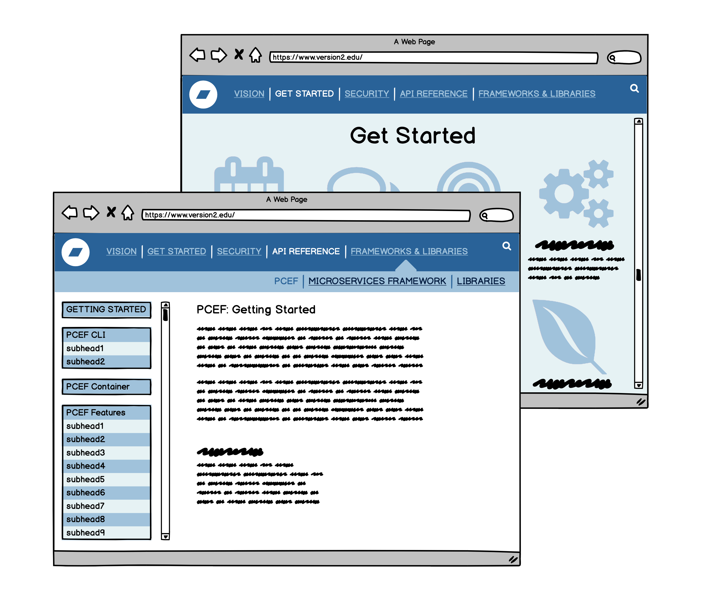

Websites and Apps
Drupal Website
The Drupal project was a redesign of an internal API documentation site for software developers. The design process included conducting user interviews, creating sketches, user flow diagrams, lo-fi and high-fi wireframes, and feedback sessions with users. After finalizing the design, I implemented it using Drupal and coded a custom theme (Summer 2019).
From Sketches and Low-Fidelity Wireframes...
...to functional Webpages

Shopping List App
This Android app has a simple but colorful UI to help keep track of food, clothing, and other item types. The app keeps items in a database so that the list is always available whenever the user needs to access it! (Coded using Android Studio/Java Summer 2018)

Doodle Bop App
Doodle Bop is an interactive augmented reality scavenger hunt app that leverages Google's ARCore. Users search for hidden NFC tags in order to collect objects that they can then place in their camera as they walk around. (Coded using Android Studio/Java Summer 2018)